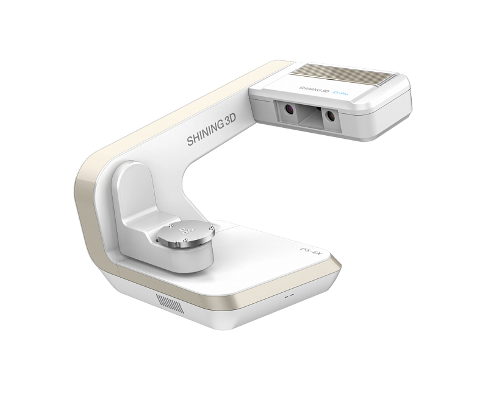

AutoScan DS-EX Pro
Multifunctional 3D laboratory scanner from SHINING 3D.
An updated scanning algorithm and an additional rotary axis allows the AutoScan-DS-EX Pro to scan hard-to-reach places, for example, this feature makes it possible to scan undercuts on impressions, and produce milled inlays with a high fit with minimal investment.
Compact and powerful, the redesigned AutoScan-DS-EX Pro provides fast scanning and makes the lab more dynamic, allowing dental technicians to easily handle large workloads.

Specifications
| General characteristics | |
|---|---|
| Camera resolution | 1.3 MP |
| Accuracy | <10 micron |
| Scan time | Overbite Model: 8 sec; Upper/Lower Jaw: 12 sec; 1-4 dies: 13 sec; 5-8 dies: 21 sec; Impression scan: 58 sec |
| File Format | STL / OBJ / PLY |
| Light Source | Blue light |
| Size | 260 × 270 × 420 mm |
| Weight | 5 kg |
| Interface | USB 3.0 |
| Power unit | DC24V |
| Weight | 330±20g (including batteries, tip) |